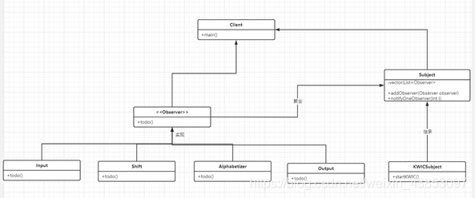

事件系统

事件系统软件体系结构乃是一种基于事件驱动的架构模式。
在此模式下，系统中的组件（亦称事件源）产生事件，并将其发布至事件系统中。其他组件（也称事件处理器）能够订阅这些事件，且在事件发生时执行相应操作。
事件系统软件体系结构乃是一种基于事件驱动的架构模式。
在此模式下，系统中的组件（亦称事件源）产生事件，并将其发布至事件系统中。其他组件（也称事件处理器）能够订阅这些事件，且在事件发生时执行相应操作。